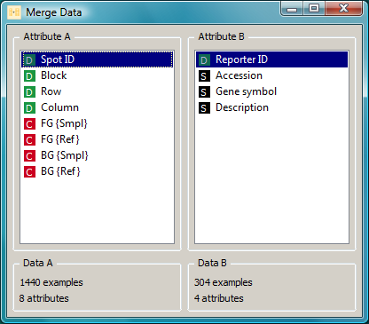
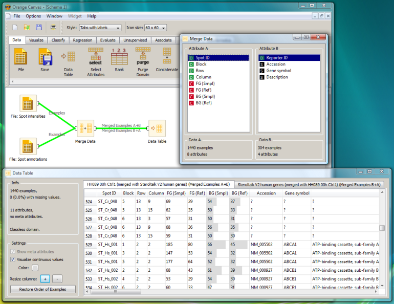

This is documentation for Orange 2.7. For the latest documentation, see Orange 3.
Merge Data¶
Merges two data sets based on the values of selected attributes.
Signals¶
Inputs:
- Examples A (ExampleTable)
Attribute-valued data set.
- Examples B (ExampleTable)
Attribute-valued data set.
Outputs:
- Merged Examples A+B (ExampleTable)
Attribute-valued data set composed from instances from input data A which are appended attributes from input data B and their values determined by matching the values of the selected attributes.
- Merged Examples B+A (ExampleTable)
Attribute-valued data set composed from instances from input data B which are appended attributes from input data A and their values determined by matching the values of the selected attributes.
Description¶
Merge Data widget is used to horizontally merge two data sets based on the values of selected attributes. On input, two data sets are required, A and B. The widget allows for selection of an attribute from each domain which will be used to perform the merging. When selected, the widget produces two outputs, A+B and B+A. The first output (A+B) corresponds to instances from input data A which are appended attributes from B, and the second output (B+A) to instances from B which are appended attributes from A.
The merging is done by the values of the selected (merging) attributes. For example, instances from from A+B are constructed in the following way. First, the value of the merging attribute from A is taken and instances from B are searched with matching values of the merging attributes. If more than a single instance from B is found, the first one is taken and horizontally merged with the instance from A. If no instance from B match the criterium, the unknown values are assigned to the appended attributes. Similarly, B+A is constructed.
Examples¶
Below is an example that loads spot intensity data from microarray measurements and spot annotation data. While microarray data consists of measurements of several spots representing equal DNA material (denoted by equal Spot ID's), the annotation data consists of a single line (instance) for each spot.
Merging the two data sets results in annotations appended to each spot intensity datum. The Spot intensities data is connected to Examples A input of the Merge Data widget, and the Spot annotations data to the Examples B input. Both outputs of the Merge Data widget are then connected to the Data Table widget. In the latter, the Merged Examples A+B are shown. The attributes between Spot ID and BG {Ref}, including these two, are from the Spot intensities data set (Examples A), while the last three are from the Spot annotations data set (Examples B). Only instances representing non-control DNA (these with Spot ID equal to ST_Hs_???) received annotations, while for the others (Spot ID = ST_Cr_048), no annotation data exists in the Spot annotations data and unknown values were assigned to the appended attributes.
Hint¶
If the two data sets consists of equally-named attributes (others than the ones used to perform the merging), Orange will by default check for consistency of the values of these attributes and report an error in case of non-matching values. In order to avoid the consistency checking, make sure that new attributes are created for each data set: you may use ”... Always create a new attribute” option in the File widget for loading the data.